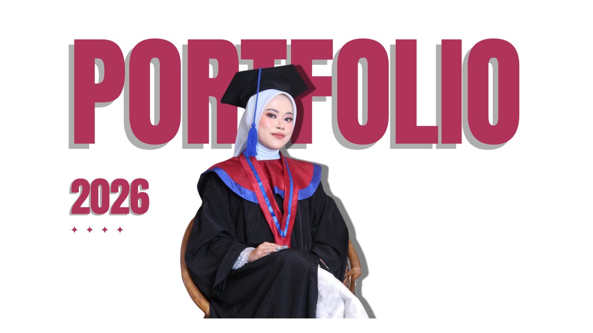
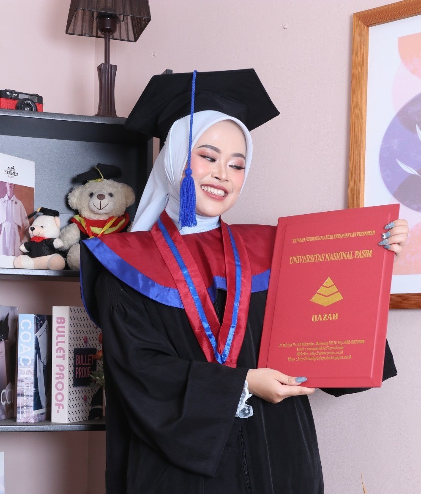

Siti Anzhanny M.
I'm Web Developer
About
Lulusan Sarjana Komputer dengan program studi Teknik Informatika dengan pengalaman dalam Web Development, UI/UX Design, serta pengembangan aplikasi berbasis web melalui program magang, studi independen, dan berbagai proyek lainnya.

Web Developer & UI/UX Designer
Memiliki pengalaman mengembangkan aplikasi web menggunakan PHP, Laravel, React JS, serta merancang antarmuka pengguna menggunakan Figma. Terbiasa bekerja secara kolaboratif dengan metodologi Agile dan menggunakan GitHub sebagai version control.
- Phone: +62 896-2918-3036
- City: Bandung, Jawa Barat
- Degree: Bachelor of Informatics Engineering
- Email: sanzhannym23@gmail.com
- LinkedIn: linkedin.com/in/sanzhanym
- Status: Fresh Graduate
Saya memiliki minat dalam Web Development, UI/UX Design, dan Software Engineering serta terus mengembangkan kompetensi di bidang Quality Assurance. Dikenal sebagai pribadi yang komunikatif, adaptif, teliti, dan mampu bekerja sama dalam tim untuk menghasilkan solusi yang efektif dan berorientasi pada kebutuhan pengguna.
Skills
Keahlian teknis yang saya kuasai dalam pengembangan web dan desain antarmuka.
Resume
Ringkasan perjalanan akademik, pengalaman profesional, serta kontribusi saya dalam pengembangan perangkat lunak, komunitas, dan organisasi.
Professional Summary
Siti Anzhanny Marwa
- Fresh Graduate Sarjana Teknik Informatika (IPK 3,90/4,00).
- Pengalaman melalui program magang, studi independen, freelance, dan volunteer.
- Berpengalaman dalam Web Development, UI/UX Design, dan pengembangan aplikasi berbasis web.
- Menguasai PHP, Laravel, React JS, JavaScript, MySQL, Figma, GitHub, dan Trello.
- Terbiasa bekerja menggunakan metodologi Agile dan kolaborasi lintas divisi.
- Memiliki minat pada Software Engineering, Quality Assurance, dan UI/UX Design.
Education
Bachelor of Informatics Engineering
Graduated October 2025
Universitas Nasional Pasim, Bandung
GPA : 3.90 / 4.00
Academic Project
Undergraduate Final Project
Januari 2025 - Oktober 2025
Pembangunan Sistem Informasi Administrasi Sekolah Berbasis Web Menggunakan Framework Laravel 12 (Studi Kasus: Deeniyat Al Hidayah)
- Merancang dan mengembangkan sistem informasi administrasi sekolah berbasis web untuk mendukung digitalisasi proses administrasi di Deeniyat Al Hidayah.
- Mengimplementasikan fitur pengelolaan data siswa, pembayaran pendaftaran, pembayaran SPP, serta pelaporan administrasi secara terintegrasi.
- Mengembangkan aplikasi menggunakan Laravel 12, PHP, MySQL, Bootstrap, JavaScript, dan Git sebagai version control.
- Menerapkan konsep MVC, autentikasi pengguna, validasi data, dan pengelolaan database relasional untuk meningkatkan efisiensi dan keamanan sistem.
- Dirancang untuk menggantikan proses administrasi manual sehingga meningkatkan akurasi pencatatan, keamanan data, serta kemudahan akses informasi secara real-time.
Community Involvement
Maungulik.id
Content Creator Specialist (Volunteer) | Oktober 2024 – Juni 2026
- Menyusun content plan dan kalender publikasi media sosial.
- Mengembangkan konsep konten edukatif dan promosi sesuai kebutuhan komunitas.
- Mendesain konten visual menggunakan Canva serta menyusun caption yang informatif.
- Berkolaborasi dalam proses perencanaan, revisi, dan publikasi konten.
Code Circle Bandung
Mentor Pemrograman Web (Volunteer) | Juli 2023 – Desember 2023
- Membimbing tiga mahasiswa dalam mempelajari HTML, CSS, dan JavaScript dasar.
- Memberikan praktik, latihan, dan pendampingan dalam penyelesaian mini project berbasis web.
- Mengevaluasi hasil pembelajaran melalui proyek akhir berupa pengembangan website sederhana.
Leadership & Organization
BEM Fakultas Ilmu Komputer (BEM-FIK)
Bendahara Umum | 2024 – 2025
- Menyusun dan mengelola Rancangan Anggaran Biaya (RAB) seluruh program kerja fakultas.
- Melakukan audit internal dan pengawasan penggunaan dana untuk menjaga transparansi laporan keuangan.
- Berkolaborasi dengan pengurus organisasi dalam pengelolaan administrasi keuangan.
Himpunan Mahasiswa Teknik Informatika (HIMATIF)
Bendahara | 2023 – 2024
- Mengelola administrasi keuangan organisasi.
- Mengoptimalkan alokasi dana untuk berbagai kegiatan kemahasiswaan.
- Menyusun pencatatan arus kas secara sistematis dan akurat.
Professional Experience
Web Developer (Intern)
September 2024 – Desember 2024
Luarsekolah, Bandung, Indonesia (Remote)
- Terpilih sebagai Captain of Class (CoC) Web Developer melalui proses seleksi berdasarkan hasil asesmen teknis.
- Berkoordinasi dengan Supervisor dan peserta untuk memastikan komunikasi, pemantauan progres, serta penyelesaian tugas berjalan efektif.
- Berkolaborasi dengan tim UI/UX, Desain Grafis, dan Digital Marketing dalam pengembangan platform web.
- Mengembangkan antarmuka pengguna (Front-End) berdasarkan desain yang telah disepakati menggunakan HTML, CSS, JavaScript, dan Bootstrap.
- Menyelesaikan proyek kolaboratif berbasis web bersama tim sebagai bagian dari program magang.
- Mengembangkan proyek akhir individu berupa aplikasi web sederhana menggunakan PHP Native sebagai implementasi materi yang telah dipelajari.
Web Developer - MSIB Batch 6
Februari 2024 – Juni 2024
PT Kinema Systrans Multimedia (Infinite Learning), Batam, Indonesia (Remote)
- Mengikuti Program Magang dan Studi Independen Bersertifikat (MSIB) sebagai Web Developer dalam tim lintas fungsi yang terdiri dari Project Manager, Hustler (UI/UX), dan Hacker (Developer).
- Berperan sebagai Hacker (Developer) dengan berkolaborasi bersama tim Hustler dalam proses analisis kebutuhan, perancangan solusi, hingga implementasi aplikasi.
- Mengembangkan proyek Micro "Halal Trace" mulai dari penyusunan ide, user flow, wireframe, hingga High-Fidelity Prototype menggunakan Figma.
- Mengembangkan antarmuka pengguna (Front-End) proyek Massive "Derma Ceria" menggunakan React JS dan Tailwind CSS sesuai desain yang telah dibuat.
- Berkontribusi dalam pengembangan Back-End menggunakan Node.js sesuai ruang lingkup pembelajaran program.
- Mengelola workflow pengembangan menggunakan GitHub, Trello, dan metodologi Agile untuk mendukung kolaborasi tim.
Assistant Web Developer (Intern)
Juli 2023 – September 2023
PT Padepokan Tujuh Sembilan, Bandung, Indonesia
- Mengembangkan otomatisasi sistem pemantauan peserta bootcamp menggunakan Google Workspace untuk mendukung efisiensi proses operasional.
- Menyusun laporan performa dan evaluasi teknis peserta secara terstruktur sebagai bahan monitoring perkembangan peserta.
- Mengelola dan mengintegrasikan materi asesmen teknis ke dalam Learning Management System (LMS) Moodle.
Coder (Freelance)
Oktober 2022
One Ummah Foundation Indonesia, Bandung
Mengembangkan aplikasi web "Mini Holy Qur'an" melalui integrasi API dan basis data dengan membangun fitur pengelolaan data surat, juz, ayat, dan terjemahan Al-Qur'an.
Portfolio
Beberapa proyek yang telah saya kerjakan selama pengalaman profesional dan magang.
- All
- Web
- UI/UX

{kind=link}
{kind=link}
{kind=link}
{kind=link}
Services
Layanan yang saya tawarkan sebagai Web Developer dan UI/UX Designer.
Web Development
Membangun aplikasi web full-stack menggunakan PHP, Laravel, dan MySQL yang responsif dan scalable sesuai kebutuhan bisnis.
Frontend Development
Mengimplementasikan desain UI menjadi antarmuka yang fungsional menggunakan React JS, Tailwind CSS, dan JavaScript.
UI/UX Design
Merancang user flow, wireframe, dan prototipe interaktif menggunakan Figma yang berfokus pada pengalaman pengguna.
Database Management
Mengelola dan merancang database menggunakan MySQL dan PostgreSQL untuk mendukung aplikasi web yang efisien.
Version Control & Collaboration
Mengelola workflow pengembangan menggunakan GitHub dan metodologi Agile dengan tools seperti Trello untuk efisiensi proyek.
LMS & CMS Integration
Mengintegrasikan konten dan materi ke dalam Learning Management System (Moodle) serta platform CMS lainnya.
Please, Reach Out to Me!
Address
Bandung, Jawa Barat, Indonesia
Call Us
+62 896-2918-3036
Email Us
sanzhannym23@gmail.com